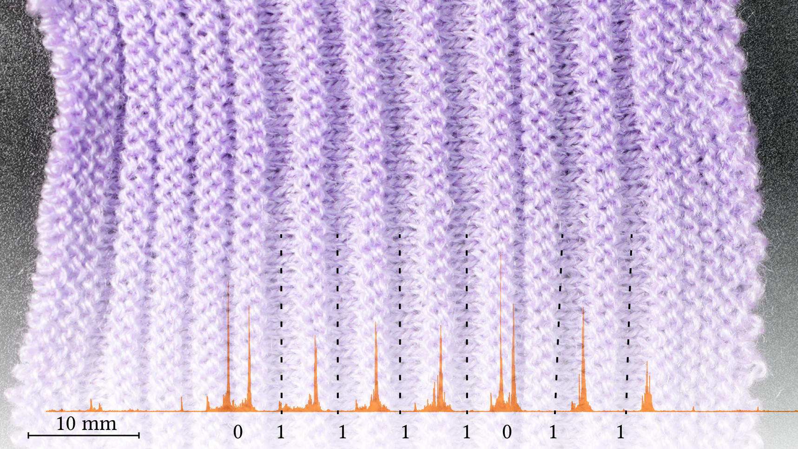
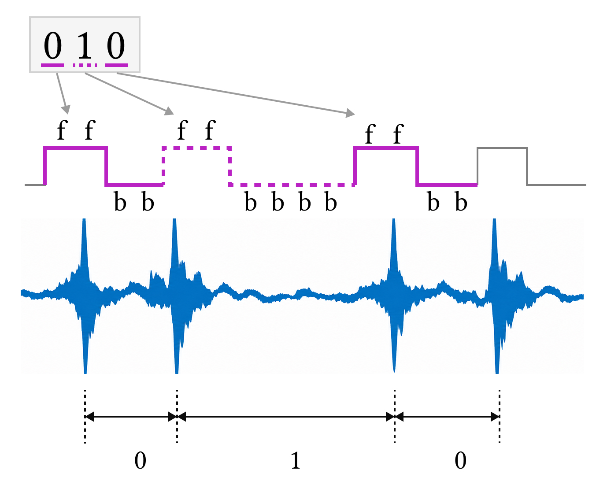

Research Project · Machine Knitting
Knitted Acoustic Barcode
A knitted barcode that embeds binary data in the spacing between raised garter regions and decodes it from acoustic waveforms captured while sliding across the fabric.

Physical Representation
0 and 1 are represented by changing the spacing between raised regions. Two front-bed rows remain fixed while the number of back-bed rows varies.
| Bit | Structure | Interval |
|---|---|---|
| 0 | 2 front-bed + 2 back-bed rows | Short |
| 1 | 2 front-bed + 4 back-bed rows | Long |

Encoding Workflow
Convert the source to binary
A number or UTF-8-encoded text becomes a sequence of 0 and 1 symbols.
Expand bits into bed-row intervals
pattern-generator.js maps each bit to its front-/back-bed run, adds margins and repeated marker structure, and creates inverse upper and lower halves.
Generate a machine-readable image
The generator writes a red/green PNG in which color identifies front- and back-bed knitting.
Translate pixels into machine operations
image-kp.js reads the bed assignment, inserts loop transfers where needed, and outputs a Knitout .k program for the knitting machine.
Open-source tool: image-kp.js in CMU Textiles Lab's Knitout Examples ↗ converts a color-coded image into a knit/purl sheet in Knitout format.
Decoding Workflow
Record the raised structure
A probe with a contact microphone slides across the fabric, and its piezo signal is captured through the USB audio interface.
Expose the contact events
The raw waveform passes through fourth-order 50 Hz high-pass and 500 Hz low-pass Butterworth filters, then its absolute value is taken.
Measure the acoustic spacing
Peaks above 40% of the processed global maximum are detected with at least 40 ms separation. The decoder measures every peak-to-peak interval.
Recover the binary sequence
Deterministic one-dimensional K-means splits intervals into short 0 and long 1 clusters, then concatenates the labels into a bit string. The current decoder reads all detected intervals in the selected recording window.